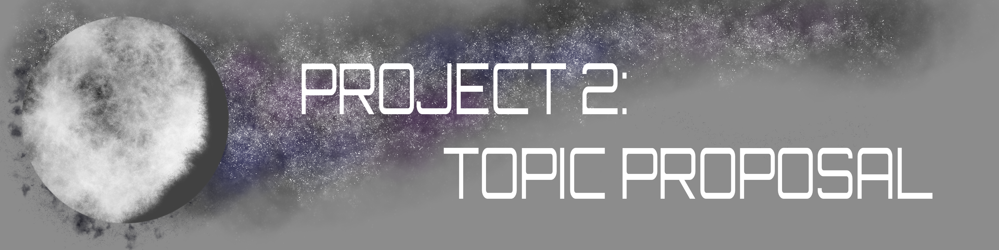

My proposed topic is the Life Cycle of Stars. In this topic, I will discuss two categories of stars: low-to-medium mass stars and massive-to-supermassive stars. Most people only know about the more simple and plain idea of the beginning and end of a star's life, but there is a lot more to explore in between. Such as how stars can die to leave behind remnants like a white dwarf or even a black hole. I personally find stars extremely fascinating and beautiful. I have always been interested in space and the universe, and I think that stars are one of the most interesting aspects of it. Given this, I believe this topic is a perfect fit for me and will allow me to bring my all into the project.
The goal of this topic is to provide a fun and informative overview, while also engaging my audience with the beauty of stars through a website. Several resources try to explain this topic in long boring paragraphs, blinding white backgrounds, and chunky images that take up half the page; however, I believe a website can only capture attention with visual appeal. As such, I aim to create a visually fun and creative website that will encourage my viewers to appreciate stars as much as I do.
For my app, I plan to make the first page a visually appealing introduction to the topic of star life cycles. This page will include engaging content and images to capture the user's attention and provide a brief overview of what to expect from the rest of the website.
The app will have steps as actions, in which this will allow them to progress through the app. They'll be required to choose between two options: small-to-medium mass stars and massive-to-supermassive stars. These options will be available for the user to come back to at any time. After selecting one or the other, they'll be given 4 more steps for each. Small-to-medium stars will have red giants, planetary nebula, white dwarf, and black dwarf. Meanwhile, massive-to-supermassive stars will have red supergiants, supernovae, neutron stars, and black holes. Each one of these last options will provide detailed information about the respective star life cycles. This will be detailed out through paragraphs, images, and other interactive elements.
Below is a list of the steps for a more organized reference:
The app will have a third page dedicated to summarizing the informaiton for users to simply read. Given that the page can't have the same informaiton as the steps, it will be an overview centered more towards the importance of stars to the rest of the universe. Such as how they are the main source of energy for the universe, and how they are responsible for creating the elements that make up everything we know.
The app's fourth page will serve as a "Contact Us" page for users to get in touch with the developer. I only intend to collect the user's name and email address, as well as a message box for them to write their message.